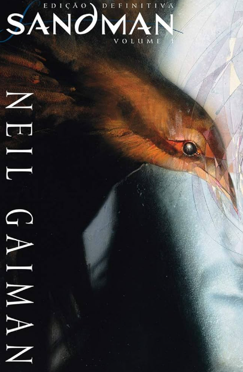

Sandman
Sandman é uma série de quadrinhos criada por Neil Gaiman e publicada pela Vertigo, da DC Comics, entre 1989 e 1996. A história segue Sonho, o senhor dos sonhos e governante do Sonhar, um reino onde as pessoas sonham.
Sonho é capturado por um culto que o aprisionou por 70 anos. Após ser libertado, Sonho deve reconstruir seu reino e lidar com as consequências de sua ausência.
Sandman é uma história complexa e ambiciosa, que explora temas como a natureza do sonho, da memória e da identidade. A série é considerada uma das mais importantes e influentes da história dos quadrinhos.
Comprar